The all-in-one desktop application for network topology design, containerlab simulation, digital twin monitoring, and multi-vendor automation.
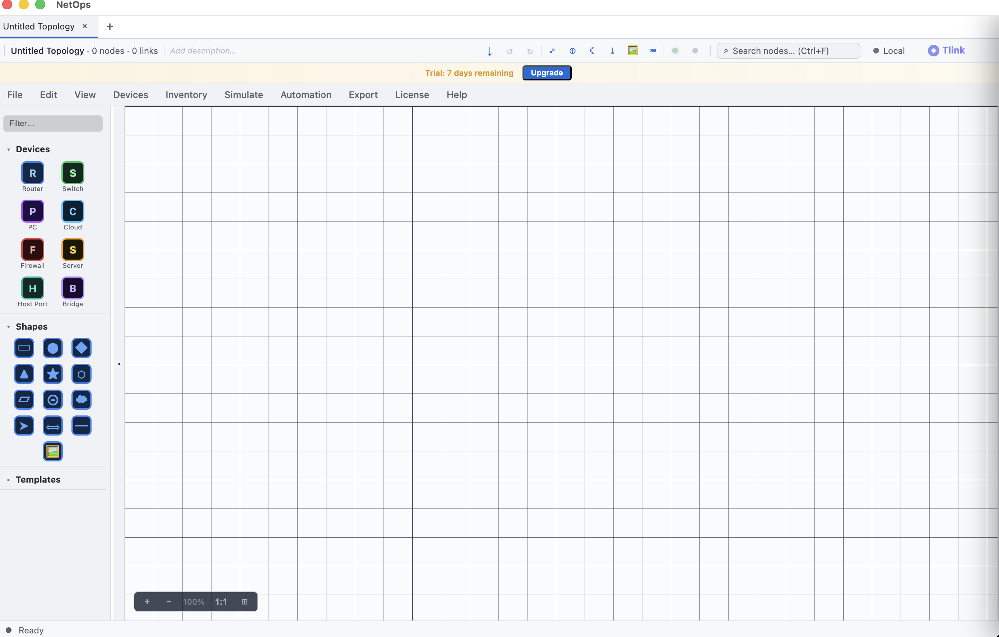
From topology design to live monitoring, simulation to automation — all in one desktop application.
Drag-and-drop 2D canvas for building network topologies. Full WebGL-powered 3D view with orbit, zoom, pan, and fly-through camera controls.
Deploy topologies to containerlab with a single click. Auto-generates configuration and pushes to every node. Supports cEOS, cRPD, XRd, and more.
Immersive Three.js-powered 3D topology view. Orbit around your network, zoom into racks, fly through data paths. Real-time link utilization overlays.
Live polling of CPU, memory, interface counters, and BGP/OSPF state. Real-time alarm dashboard, config drift detection, and health scoring.
Auto-discover network topology via LLDP and SNMP. Import existing networks from CSV, JSON, or direct device interrogation. Build topologies from live networks.
Event-driven rules engine with workflows, webhooks, and compliance checks. Trigger actions on interface flaps, BGP state changes, or threshold breaches.
Full lifecycle: propose changes, get approval, deploy to devices, verify with post-checks, and automatic rollback on failure. Audit trail included.
Generate Ansible playbooks, Terraform configs, GNS3 projects, and containerlab YAML. One topology, any deployment target you need.
Select a topology template, deploy a containerlab, auto-generate configs, and monitor everything in real time.
Choose from 157 pre-built network topologies across datacenter, WAN, campus, and SP architectures.
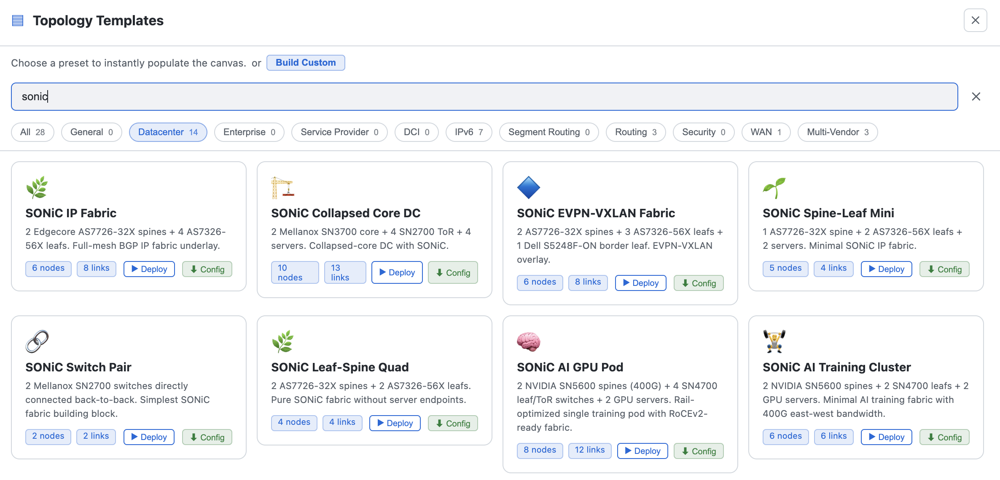
One-click containerlab deployment with SONiC, cEOS, cRPD, SRL, and more. Instant topology creation.
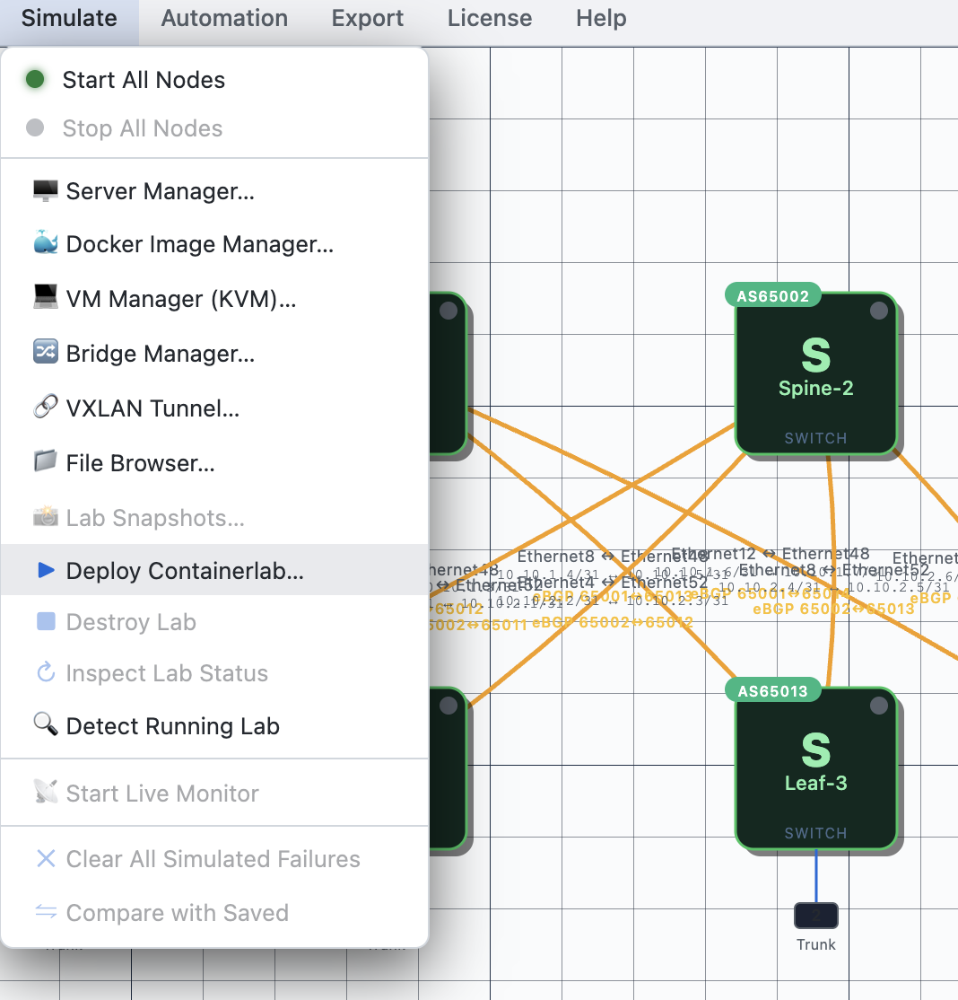
Auto-generate vendor-specific configurations for all 13 supported vendors. Push configs to every node.
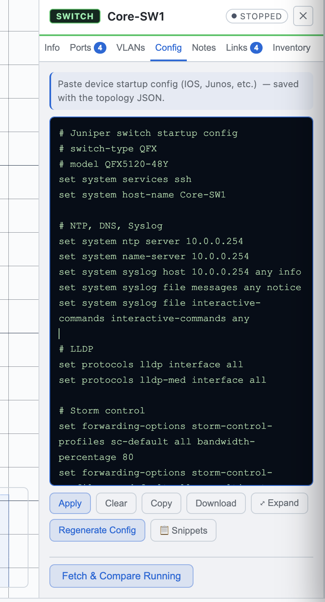
Switch to 3D view, monitor device health, track inventory, and manage your entire network in real time.
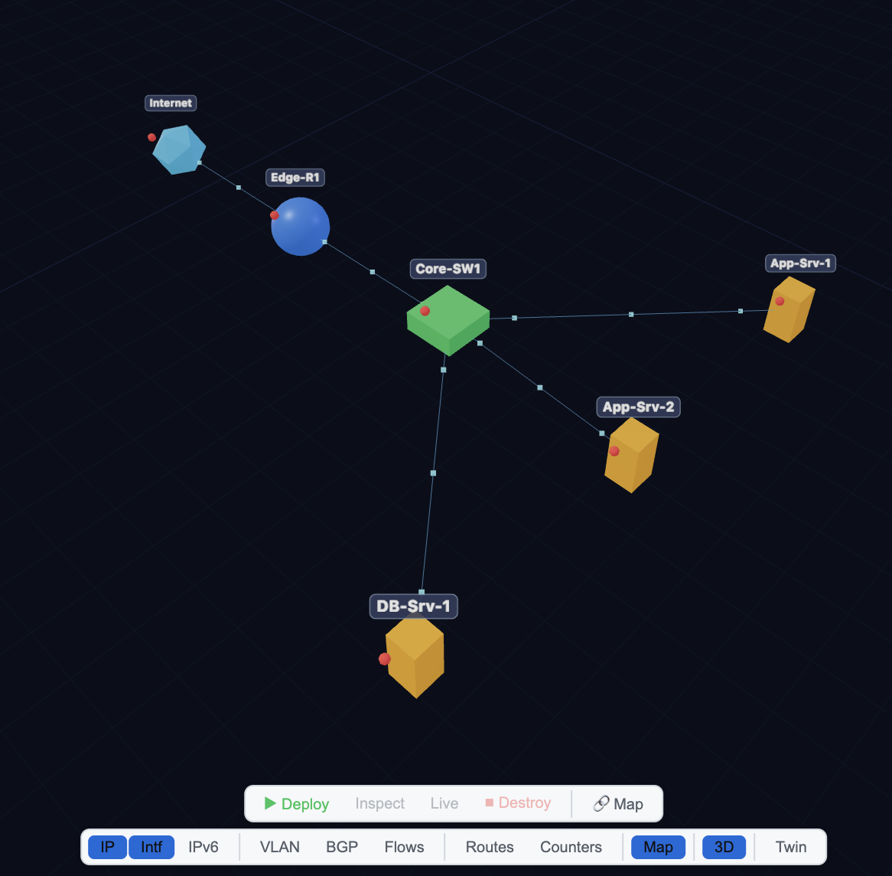
Three.js-powered immersive 3D topology with real-time data overlays and interactive navigation.
Mouse-driven orbit controls. Scroll to zoom, drag to rotate, right-click to pan. Touch support for tablets.
First-person camera to fly through your network. Navigate cable paths, inspect rack layouts, and trace traffic flows.
Link utilization heatmaps, device health indicators, BGP/OSPF adjacency states, and traffic flow animation on links.
Toggle between physical, logical, and overlay network layers. Filter by VLAN, VRF, or segment for focused analysis.
Production-ready topologies for every network architecture. Deploy EVPN/VXLAN fabrics in one click.
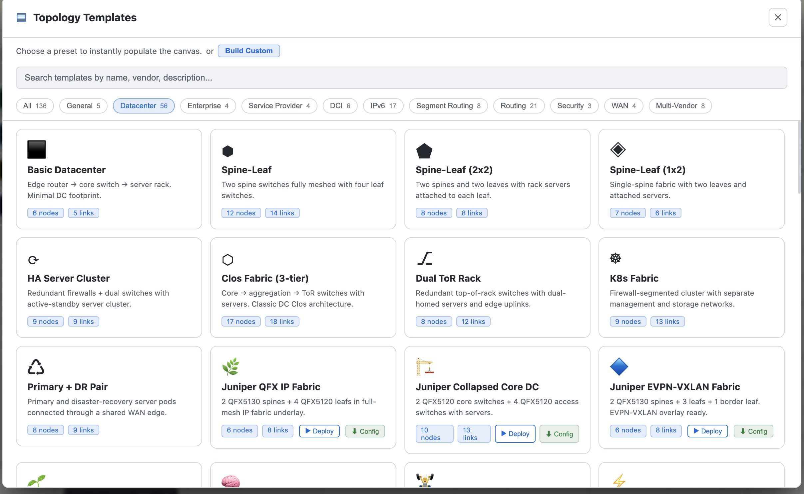
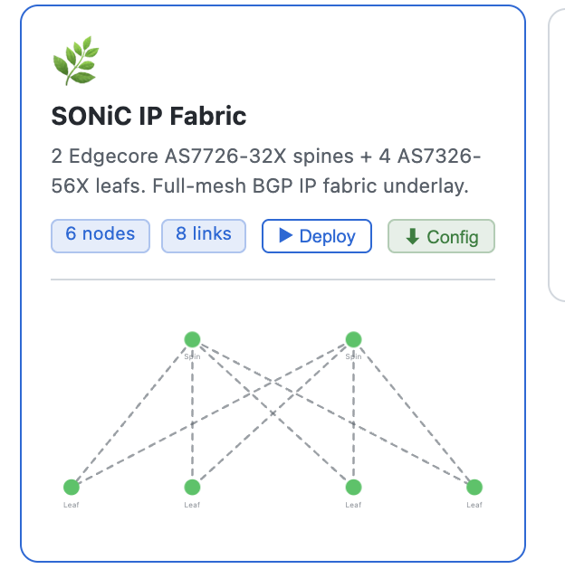
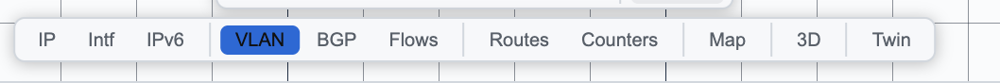
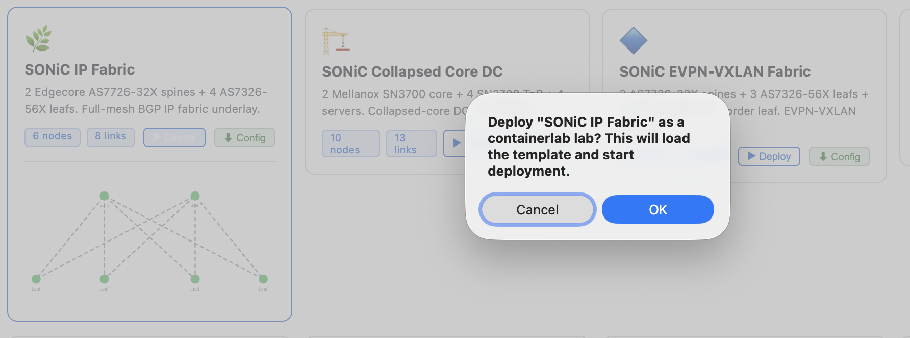
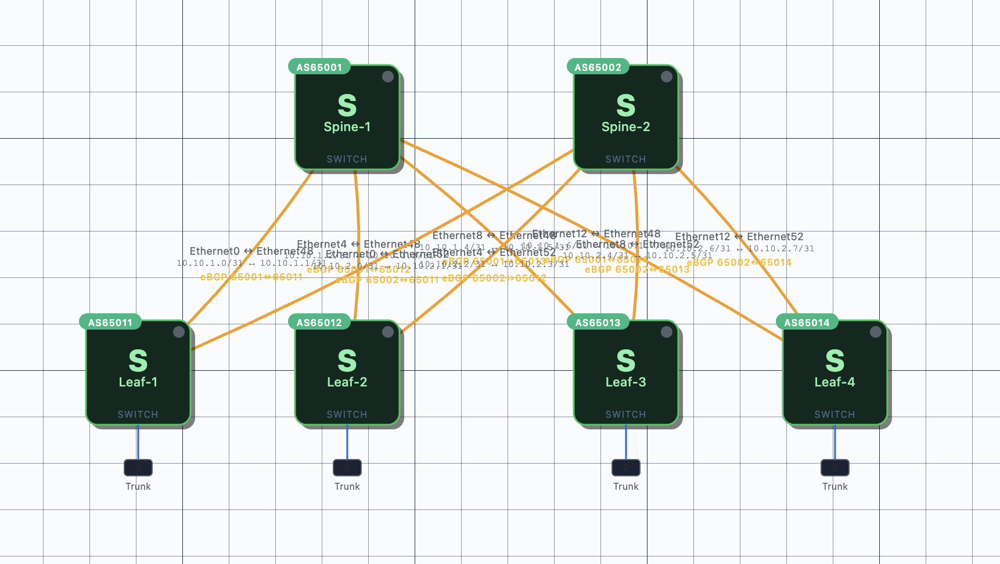
EVPN/VXLAN leaf-spine, IP fabrics, multi-tier Clos, and collapsed-core designs. From 2-tier to 5-stage Clos with full BGP underlay/overlay.
52 templatesHub-and-spoke, full-mesh, DMVPN, and SD-WAN overlay topologies. MPLS L3VPN, segment routing, and traffic engineering templates.
38 templatesThree-tier campus, routed access, micro-segmentation, and branch gateway designs. 802.1X, DHCP snooping, and first-hop security baked in.
34 templatesMPLS core, PE-CE routing, BGP route reflectors, carrier-of-carriers, and inter-AS MPLS VPN. Full IS-IS/OSPF underlay options.
22 templatesDMZ architectures, firewall sandwich, zero-trust segmentation, and microsegmentation designs with ACL and policy templates.
11 templatesMulti-vendor topology design with vendor-specific configuration generation, templates, and live polling.
Bridge the gap between your simulated topologies and production hardware with intelligent device mapping and IP management.
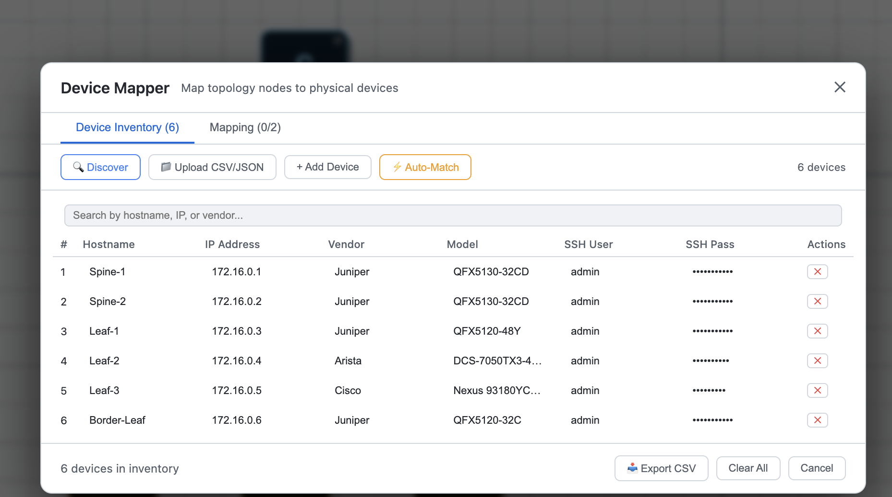
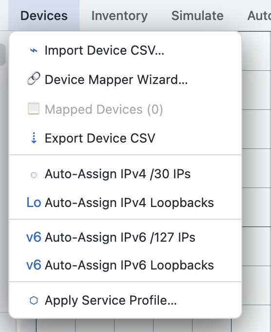
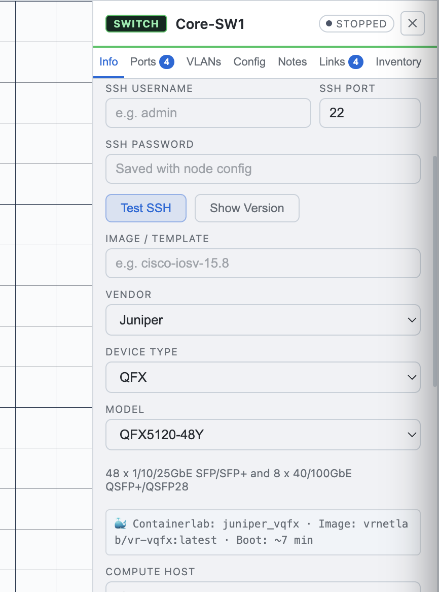
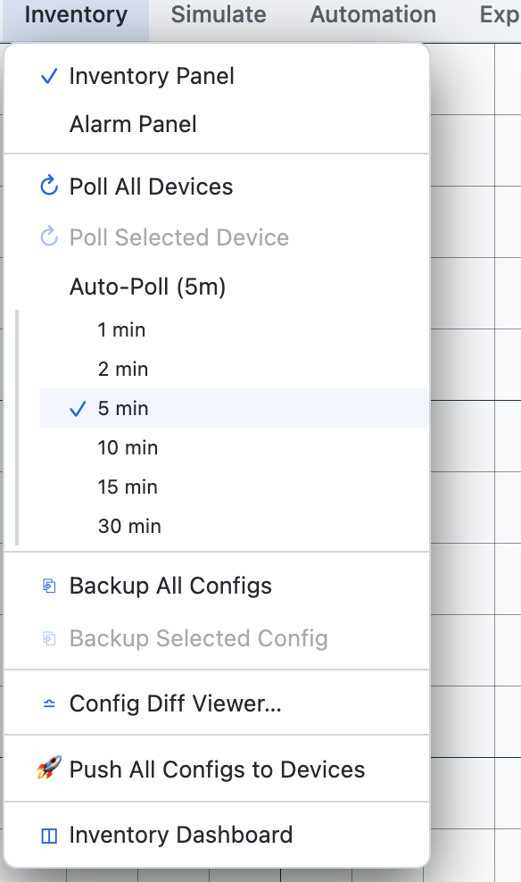
Build workflows that respond to network events in real time. From threshold alerts to full remediation pipelines.
Interface flap, BGP down, threshold breach
Match conditions, severity, vendor, device
Push config, run script, call webhook
Post-check validation, compliance audit
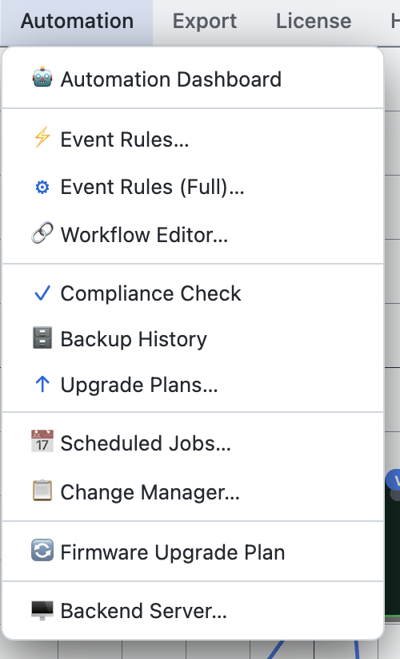
Visual drag-and-drop workflow editor. Chain actions together: collect data, transform, decide, execute, verify. Loops and conditionals supported.
Trigger workflows from external systems via webhooks. REST API for integration with ServiceNow, PagerDuty, Slack, and CI/CD pipelines.
Define compliance policies as code. Continuous auditing against NTP, DNS, SNMP, AAA, and interface naming standards. Auto-remediate violations.
From proposal to rollback — every change is tracked, approved, verified, and reversible.
For enterprise and large-scale deployments. Offload SSH/SNMP polling, run containerlab, and share topologies across teams.
Backend server handles all SSH and SNMP connections. Desktop app stays lightweight while the server polls hundreds of devices concurrently.
Multiple engineers share the same topology, device inventory, and monitoring data. Role-based access controls for view, edit, and deploy permissions.
Deploy containerlab topologies on the server. Manage multiple labs simultaneously. Scale lab resources independently from the desktop app.
Topologies, device configs, polling history, and automation logs stored on the server. Survives desktop app restarts and team member changes.
Centralized encrypted credential management. Device credentials never leave the server. Audit log for every credential access event.
REST API for external integrations. WebSocket for real-time events. Connect to CMDB, ticketing systems, and CI/CD pipelines.
Start free with all core features. Enterprise plan for teams that need the backend server.
Full-featured desktop application for individual network engineers and small teams.
For teams and organizations that need centralized management, multi-user access, and enterprise support.
Free, open source, and cross-platform. Install in under a minute.
Intel & Apple Silicon
x64 & ARM64
DEB, RPM, AppImage
Clone the repository and build locally with npm.
git clone https://github.com/user/tlink-netops.git cd tlink-netops npm install && npm run build
Join network engineers who design, simulate, and operate networks in a single application.